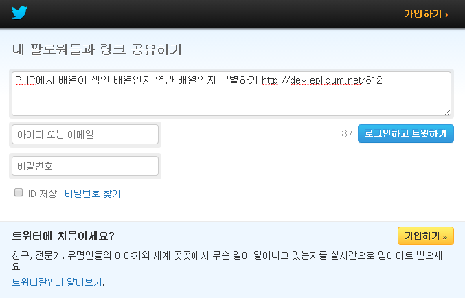

페이스북과 마찬가지로, 트위터 역시 URL로 Redirect하는 것 만으로도 글 내보내기 기능을 구현할 수 있습니다. URL은 아래와 같습니다. url 파라메터에 내보낼 웹 페이지의 URL을 넣고, text 파라메터에는 기본값으로 표시할 트윗 내용을 넣으면 됩니다.
https://twitter.com/intent/tweet?text=TEXT&url=PAGE_URL

트위터 API는 url 파라메터에 들어간 URL이 20글자가 넘을 경우, 자동으로 URL을 축약합니다. 트위터에는 140글자만 작성할 수 있는 제한이 있기 때문입니다. URL 자동축약 덕분에 우리는 GET 파라메터가 여러 개 붙는 URL이라도 안심하고 API를 이용할 수 있습니다.